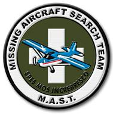

|
 For immediate release, May 5, 2009 Contact: Lew Toulmin, 301-775-6115 (c); 301-942-6062 (o) Explorers Club Members Help Find Missing Plane
Two members of The Explorers Club have helped to find a plane missing in Arizona for over two years. Lew Toulmin, MN '04 and Robert Hyman, LF '93 served as members of the private Missing Aircraft Search Team (MAST) which helped find Cessna 182 number N2700Q, missing near Sedona, Arizona since September 2006. Another member, Simon Donato, FI '06 studied the case and organized a team of Canadian adventure athletes to work with MAST in searching for the downed plane.
According to Toulmin, "MAST efforts in the N2700Q case included devoting over 1000 hours of volunteer time to the search analysis; undertaking and documenting over 40 interviews with friends of the victims, flight instructors, possible witnesses, family members and others; and reviewing data and interviews from the 2006 search effort. Our team also obtained and analyzed over 1,000,000 radar hits for the day in question; verified the radar track which proved to be a vital clue in the case; and undertook an aerial search and recon of the subject area." Said Hyman, "But we feel that the real hero of this effort was the father of one of the victims, Phil Randolph of Phoenix. He kept the case alive by circulating pictures of his daughter Marcy, the passenger in the plane, contacting the media, re-activating his pilot's license so that he could search by air, and spending countless hours searching on the ground. Other members of victims' families, local search and rescue organizations, private detectives and friends were very active, but Phil played a vital role." The Cessna, carrying pilot Bill Westover and passenger Marcy Randolph, took off from Deer Valley Airport in north Phoenix on 24 September 2006, and headed north. It disappeared off radar nine nautical miles southwest of Sedona, Arizona, and a substantial three week search by the Civil Air Patrol and others never found a trace. However, according to Toulmin, efforts by the private team and the family paid off in the end. He said, "the Missing Aircraft Search Team includes experts in search theory, search and rescue, aviation, radar analysis, communications, mountaineering, expedition management and wilderness survival. We developed 16 scenarios for the possible plane crash, refined them, and came up with three top candidate areas for the location of the plane. The plane was actually found in our highest probability area." Stated Hyman, "The key lead in the case was uncovered by a MAST team member from California, Chris Killian, who came across an old overlooked fire report for the date of the crash. He was able to track down the hikers who made the report and had even taken pictures of the small fire across a steep canyon. Intrigued by the new knowledge that their 2006 fire report might have been a plane crash, the hikers last week went back to the area of the sighting and stumbled across the crumpled aircraft, hidden by fallen trees. MAST learned from the hikers that they had found what appeared to be a plane, and MAST immediately called the local Sheriff's Office. Authorities have now confirmed that the find was in fact the missing plane N2700Q and have just confirmed the identities of the victims." Hyman, an expert in mountaineering and leader of several Explorers Club Flag expeditions, described some of MAST's techniques. "There is a lot of interest in Google Earth (GE) these days," he said. "We found GE invaluable as the MAST common reference tool for visualizing terrain, and locating, analyzing and discussing clues, tracks, anomalies, logistical support locations, and possible access and camping locations for searchers." According to an official MAST release, the Missing Aircraft Search Team was founded when the search for adventurer/aviator Steve Fossett ended in 2008. Almost all MAST members had worked together on that search, and they felt that their assembled capabilities should be applied to similar cases, and formed a volunteer group. According to Toulmin, an expert in emergency management, "As far as we know, there is no other group active in this area, trying to analyze cold cases of light aircraft disappearing, applying new technologies and the latest methods, and then capable of launching ground and air searches in high probability areas. We were motivated to do this in the Steve Fossett case, because several of us on that effort were members of the Explorers Club, of which Steve was a member, Fellow and Medalist. That search is where we honed our skills." Said Hyman, "Most people don"t realize that this is a national problem. There are over 100 light aircraft missing since 1962, all with family and friends suffering and wondering what happened to their loved ones. We just want to help bring closure to these families." More information? A website produced by the families and devoted to this search is located at www.n2700q.com/. Family statements regarding MAST assistance are posted on that site. * * * Close this window |